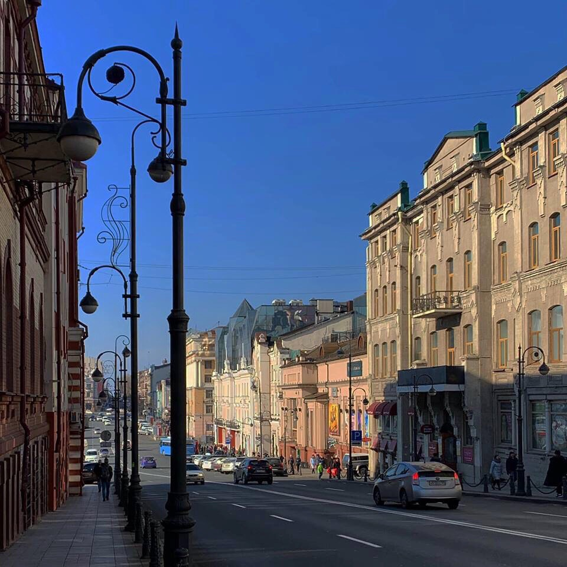
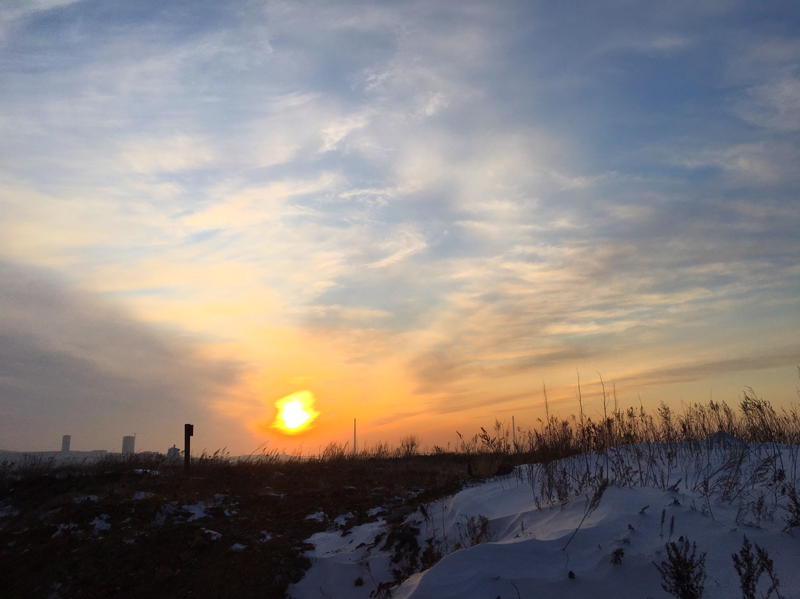
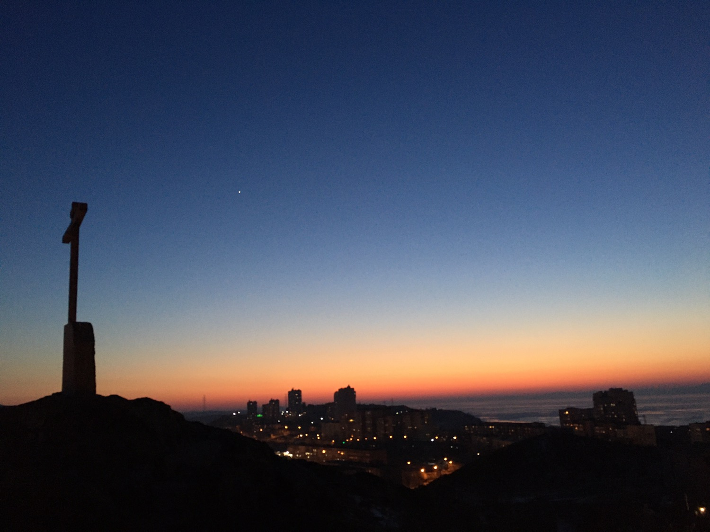
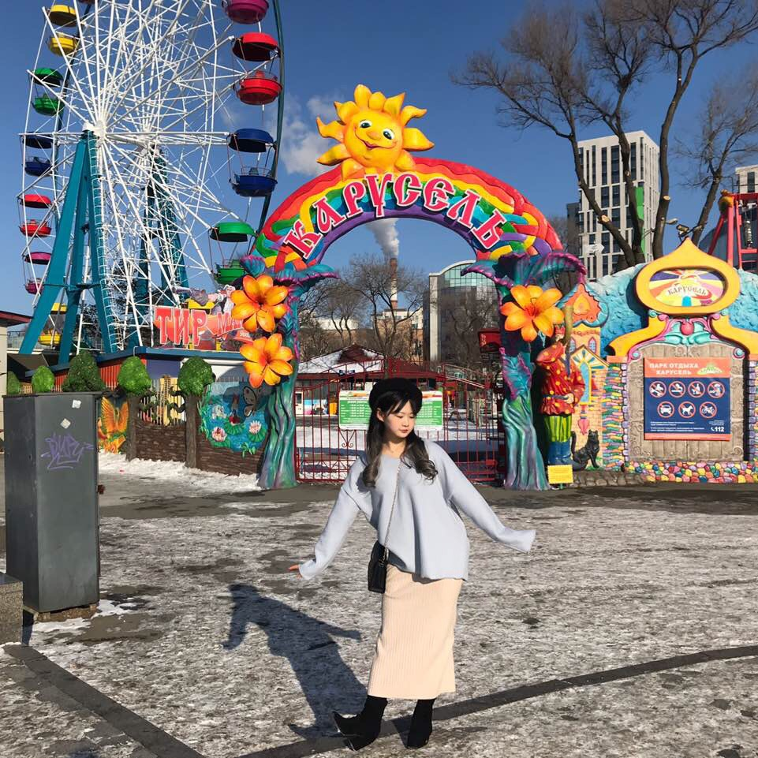
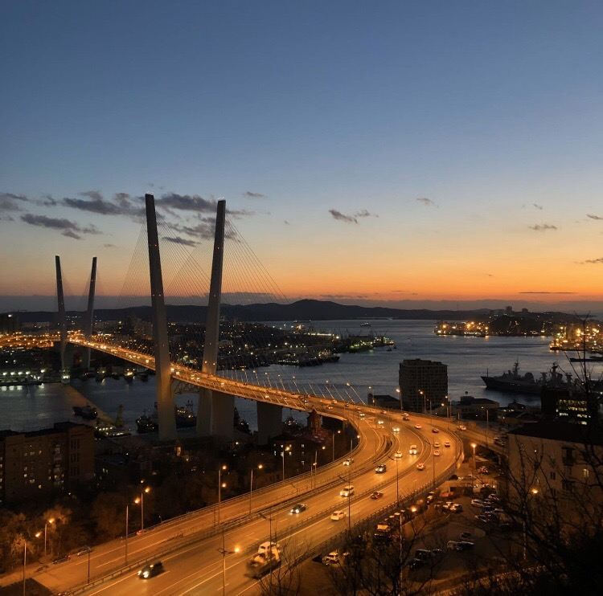
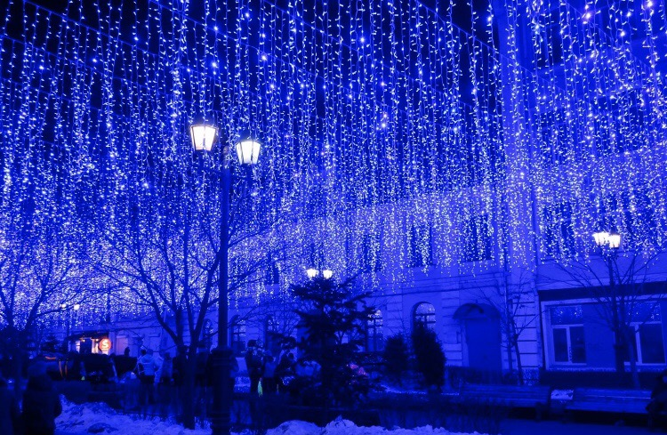
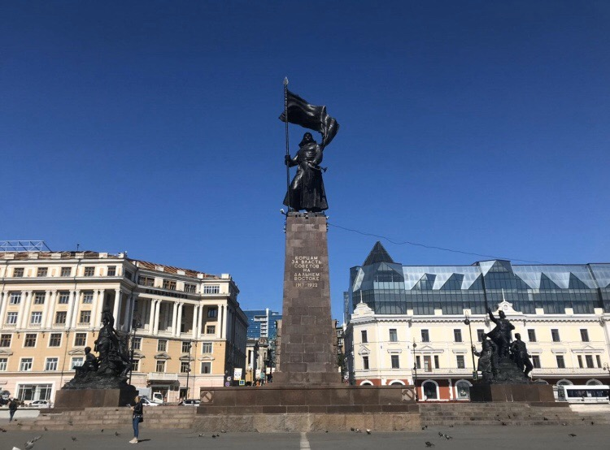
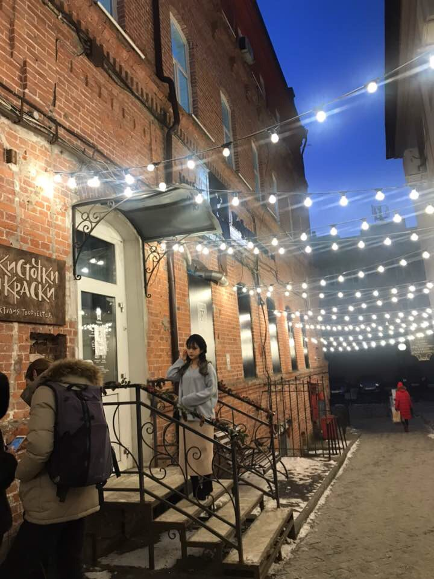

vladivostok
2시간 반으로 즐기는 유럽감성

블라디보스토크는
‘동방의 지배자’라는 뜻으로 주로 태평양 연안의 해군기지로 발전한 러시아 극동 지방의 최남단 도시다.
중국이나 북한과의 국경에서 멀지 않은 동해의 골든혼만 주변에 자리 잡은 블라디보스토크는 극동연방관구와 프리모르스키(연해)주의 행정중심지다.
풍경


관광지

- 해양공원: 볼거리와 즐길거리가 가득한 해양 테마파크

- 독수리전망대: 블라디보스토크의 풍경을 제대로 즐길 수 있는 현지 대표 명소

- 아르바트거리: 쇼핑 스팟과 맛집이 밀집되어 있는 유럽풍 번화가

- 혁명광장: 매년 다채로운 축제가 펼쳐지는 볼거리가 다양한 광장

- 굼백화점: 블라디보스토크에서 가장 오래된 백화점
쇼핑리스트
vlog